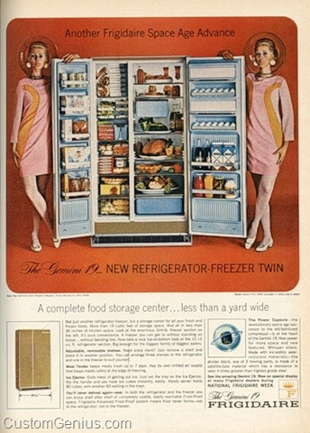
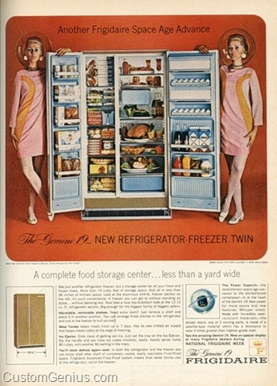

Definition
A refrigerator (colloquially fridge or fridge freezer in the UK) is a popular household appliance that consists of a thermally insulated compartment and a heat pump (mechanical, electronic or chemical) that transfers heat from the inside of the fridge to its external environment so that the inside of the fridge is cooled to a temperature below the ambient temperature of the room. Refrigeration is an essential food storage technique in developed countries. The lower temperature lowers the reproduction rate of bacteria, so the refrigerator reduces the rate of spoilage. A refrigerator maintains a temperature a few degrees above the freezing point of water. Optimum temperature range for perishable food storage is 3 to 5°C (37 to 41°F). A similar device that maintains a temperature below the freezing point of water is called a freezer. The refrigerator replaced the icebox, which had been a common household appliance for almost a century and a half. For this reason, a refrigerator is sometimes referred to as an icebox in American usage.
The first cooling systems for food involved using ice. Artificial refrigeration began in the mid-1750s, and developed in the early 1800s. In 1834, the first working vapor-compression refrigeration system was built. The first commercial ice-making machine was invented in 1854. In 1913, refrigerators for home use were invented. In 1923 Frigidaire introduced the first self-contained unit. The introduction of Freon in the 1920s expanded the refrigerator market during the 1930s. Home freezers as separate compartments (larger than necessary just for ice cubes) were introduced in 1940. Frozen foods, previously a luxury item, became commonplace.
Freezer units are used in households and in industry and commerce. Commercial refrigerator and freezer units were in use for almost 40 years prior to the common home models. The freezer-on-top-and-refrigerator-on-bottom style has been the basic style since the 1940s, until modern refrigerators broke the trend. A vapor compression cycle is used in most household refrigerators, refrigerator–freezers and freezers. Newer refrigerators may include automatic defrosting, chilled water, and ice from a dispenser in the door.
Domestic refrigerators and freezers for food storage are made in a range of sizes. Among the smallest is a 4 L Peltier refrigerator advertised as being able to hold 6 cans of beer. A large domestic refrigerator stands as tall as a person and may be about 1 m wide with a capacity of 600 L. Refrigerators and freezers may be free-standing, or built into a kitchen. The refrigerator allows the modern household to keep food fresh for longer than before. Freezers allow people to buy food in bulk and eat it at leisure, and bulk purchases save money.
Before the invention of the refrigerator, icehouses were used to provide cool storage for most of the year. Placed near freshwater lakes or packed with snow and ice during the winter, they were once very common. Natural means are still used to cool foods today. On mountainsides, runoff from melting snow is a convenient way to cool drinks, and during the winter one can keep milk fresh much longer just by keeping it outdoors. The word “refrigeratory” was used at least as early as the 17th century.
History
The history of artificial refrigeration began when Scottish professor William Cullen designed a small refrigerating machine in 1755. Cullen used a pump to create a partial vacuum over a container of diethyl ether, which then boiled, absorbing heat from the surrounding air. The experiment even created a small amount of ice, but had no practical application at that time.
In 1805, American inventor Oliver Evans described a closed vapor-compression refrigeration cycle for the production of ice by ether under vacuum. In 1820, the British scientist Michael Faraday liquefied ammonia and other gases by using high pressures and low temperatures, and in 1834, an American expatriate in Great Britain, Jacob Perkins, built the first working vapor-compression refrigeration system. It was a closed-cycle device that could operate continuously. A similar attempt was made in 1842, by American physician, John Gorrie, who built a working prototype, but it was a commercial failure. American engineer Alexander Twining took out a British patent in 1850 for a vapor compression system that used ether.
The first practical vapor compression refrigeration system was built by James Harrison, a British journalist who had emigrated to Australia. His 1856 patent was for a vapor compression system using ether, alcohol or ammonia. He built a mechanical ice-making machine in 1851 on the banks of the Barwon River at Rocky Point in Geelong, Victoria, and his first commercial ice-making machine followed in 1854. Harrison also introduced commercial vapor-compression refrigeration to breweries and meat packing houses, and by 1861, a dozen of his systems were in operation.
The first gas absorption refrigeration system using gaseous ammonia dissolved in water (referred to as “aqua ammonia”) was developed by Ferdinand Carré of France in 1859 and patented in 1860. Carl von Linde, an engineering professor at the Technological University Munich in Germany, patented an improved method of liquefying gases in 1876. His new process made possible the use of gases such as ammonia (NH3), sulfur dioxide (SO2) and methyl chloride (CH3Cl) as refrigerants and they were widely used for that purpose until the late 1920s.
Domestic refrigerator
In 1913, refrigerators for home and domestic use were invented by Fred W. Wolf of Fort Wayne, Indiana with models consisting of a unit that was mounted on top of an ice box. In 1914, engineer Nathaniel B. Wales of Detroit, Michigan, introduced an idea for a practical electric refrigeration unit, which later became the basis for the Kelvinator. A self-contained refrigerator, with a compressor on the bottom of the cabinet was invented by Alfred Mellowes in 1916. Mellowes produced this refrigerator commercially but was bought out by William C. Durant in 1918, who started the Frigidaire company to mass-produce refrigerators. In 1918, Kelvinator company introduced the first refrigerator with any type of automatic control. The absorption refrigerator was invented by Baltzar von Platen and Carl Munters from Sweden in 1922, while they were still students at the Royal Institute of Technology in Stockholm. It became a worldwide success and was commercialized by Electrolux. Other pioneers included Charles Tellier, David Boyle, and Raoul Pictet. Carl von Linde was the first to patent and make a practical and compact refrigerator.
These home units usually required the installation of the mechanical parts, motor and compressor, in the basement or an adjacent room while the cold box was located in the kitchen. There was a 1922 model that consisted of a wooden cold box, water-cooled compressor, an ice cube tray and a 9-cubic-foot (0.25 m3) compartment, and cost $714. (A 1922 Model-T Ford cost about $450.) By 1923, Kelvinator held 80 percent of the market for electric refrigerators. Also in 1923 Frigidaire introduced the first self-contained unit. About this same time porcelain-covered metal cabinets began to appear. Ice cube trays were introduced more and more during the 1920s; up to this time freezing was not an auxiliary function of the modern refrigerator.
The first refrigerator to see widespread use was the General Electric “Monitor-Top” refrigerator introduced in 1927, so-called because of its resemblance to the gun turret on the ironclad warship USS Monitor of the 1860s. The compressor assembly, which emitted a great deal of heat, was placed above the cabinet, and enclosed by a decorative ring. Over a million units were produced. As the refrigerating medium, these refrigerators used either sulfur dioxide, which is corrosive to the eyes and may cause loss of vision, painful skin burns and lesions, or methyl formate, which is highly flammable, harmful to the eyes, and toxic if inhaled or ingested. Many of these units are still functional today, after requiring little more service than a replacement start relay or thermostat if at all. These cooling systems cannot legally be recharged with the hazardous original refrigerants if they leak or break down.
The introduction of Freon in the 1920s expanded the refrigerator market during the 1930s and provided a safer, low-toxicity alternative to previously used refrigerants. Separate freezers became common during the 1940s; the popular term at the time for the unit was a deep freeze. These devices, or appliances, did not go into mass production for use in the home until after World War II.The 1950s and 1960s saw technical advances like automatic defrosting and automatic ice making. More efficient refrigerators were developed in the 1970s and 1980s, even though environmental issues led to the banning of very effective (Freon) refrigerants. Early refrigerator models (from 1916) had a cold compartment for ice cube trays. From the late 1920s fresh vegetables were successfully processed through freezing by the Postum Company (the forerunner of General Foods), which had acquired the technology when it bought the rights to Clarence Birdseye’s successful fresh freezing methods.
The first successful application of frozen foods occurred when General Foods heiress Marjorie Merriweather Post (then wife of Joseph E. Davies, United States Ambassador to the Soviet Union) deployed commercial-grade freezers in Spaso House, the US Embassy in Moscow, in advance of the Davies’ arrival. Post, fearful of the USSR’s food processing safety standards, fully stocked the freezers with products from General Foods’ Birdseye unit. The frozen food stores allowed the Davies to entertain lavishly and serve fresh frozen foods that would otherwise be out of season. Upon returning from Moscow, Post (who resumed her maiden name after divorcing Davies) directed General Foods to market frozen product to upscale restaurants.
Home freezers as separate compartments (larger than necessary just for ice cubes), or as separate units, were introduced in the United States in 1940. Frozen foods, previously a luxury item, became commonplace.
Freezer
Freezer units are used in households and in industry and commerce. Food stored at or below −18°C (0°F) is safe indefinitely. Most household freezers maintain temperatures from −23 to −18°C (−9 to 0°F), although some freezer-only units can achieve −34°C (−29°F) and lower. Refrigerators generally do not achieve lower than −23°C (−9 °F), since the same coolant loop serves both compartments: Lowering the freezer compartment temperature excessively causes difficulties in maintaining above-freezing temperature in the refrigerator compartment. Domestic freezers can be included as a separate compartment in a refrigerator, or can be a separate appliance. Domestic freezers are generally upright units resembling refrigerators or chests (upright units laid on their backs). Many modern upright freezers come with an ice dispenser built into their door. Some upscale models include thermostat displays and controls, and sometimes flatscreen televisions as well.
Designers/Inventors
William Cullen
William Cullen FRS FRSE FRCPE FPSG, was a Scottish physician, chemist and agriculturalist, and one of the most important professors at the Edinburgh Medical School, during its heyday as the leading centre of medical education in the English-speaking world.
Cullen was also a central figure in the Scottish Enlightenment. He was David Hume’s physician and friend, and on intimate terms with Adam Smith, Lord Kames (with whom he discussed theoretical and practical aspects of husbandry), Joseph Black, John Millar, and Adam Ferguson, among others.
He was President of the Royal College of Physicians and Surgeons of Glasgow (1746–47), President of the Royal College of Physicians of Edinburgh (1773–1775) and First Physician to the King in Scotland (1773–1790).[4] He was also, incidentally, one of the prime movers in obtaining a royal charter for the Philosophical Society of Edinburgh, resulting in the formation of the Royal Society of Edinburgh in 1783.
Cullen was a beloved teacher, and many of his students became influential figures in their own right. His best-known students—many of whom continued to correspond with him during his long life—included (in addition to Joseph Black, who became his colleague) Benjamin Rush, a central figure in the founding of the United States of America; John Morgan, who founded the first medical school in the American colonies (the Medical School at the College of Philadelphia); William Withering, the discoverer of digitalis; Sir Gilbert Blane, medical reformer of the Royal Navy; and John Coakley Lettsom, the philanthropist and founder of the Medical Society of London.
Special mention must be made of Cullen’s student-turned-opponent, John Brown, who developed the medical system known as Brunonianism, which rivalled Cullen’s. This was to have immense influence, especially in Italy and Germany, during the end of the eighteenth and beginning of the nineteenth century.
Cullen was also a successful author. He published a number of medical textbooks, mostly for the use of his students, though they were popular throughout Europe and the American colonies as well. His best known work was First Lines of the Practice of Physic, which was published in a series of editions between 1777 and 1784.
Oliver Evans
Oliver Evans (September 13, 1755 – April 15, 1819) was an American inventor, engineer and businessman born in rural Delaware and later rooted commercially in Philadelphia. He was one of the first Americans building steam engines and an advocate of high pressure steam (vs. low pressure steam). A pioneer in the fields of automation, materials handling and steam power, Evans was one of the most prolific and influential inventors in the early years of the United States. He left behind a long series of accomplishments, most notably designing and building the first fully automated industrial process, the first high-pressure steam engine, and the first (albeit crude) amphibious vehicle and American automobile.
Born in Newport, Delaware, Evans received little formal education and in his mid-teens was apprenticed to a wheelwright. Going into business with his brothers, he worked for over a decade designing, building and perfecting an automated mill with devices such as bucket chains and conveyor belts. In doing so Evans designed a continuous process of manufacturing that required no human labor. This novel concept would prove critical to the Industrial Revolution and the development of mass production. Later in life Evans turned his attention to steam power, and built the first high-pressure steam engine in the United States in 1801, developing his design independently of Richard Trevithick, who built the first in the world a year earlier. Evans was a driving force in the development and adoption of high-pressure steam engines in the United States. Evans dreamed of building a steam-powered wagon and would eventually construct and run one in 1805. Known as the Oruktor Amphibolos, it was the first automobile in the country and the world’s first amphibious vehicle, although it was too primitive to be a success as either.
Evans was a visionary who produced designs and ideas far ahead of their time. He was the first to describe vapor-compression refrigeration and propose a design for the first refrigerator in 1805, but it would be three decades until his colleague Jacob Perkins would be able to construct a working example. Similarly, he drew up designs for a solar boiler, machine gun, steam-carriage gearshift, dough-kneading machine, perpetual baking oven, marine salvage process, quadruple-effect evaporator, and a scheme for urban gas lighting, ideas and designs which would not be made reality until some time after his death. Evans had influential backers and political allies, but lacked social graces and was disliked by many of his peers. Disappointed and then angry at the perceived lack of recognition for his contributions, Evans became combative and bitter in later years, which damaged his reputation and left him isolated. Despite the importance of his work, his contributions were frequently overlooked (or attributed to others after his death) so he never became a household name alongside the other steam pioneers of his era.
Jacob Perkins
Jacob Perkins (9 July 1766 – 30 July 1849) was an American inventor, mechanical engineer and physicist. Born in Newburyport, Massachusetts, Perkins was apprenticed to a goldsmith. He soon made himself known with a variety of useful mechanical inventions and eventually had twenty-one American and nineteen English patents. He is known as the father of the refrigerator. He was elected a Fellow of the American Academy of Arts and Sciences in 1813.
Michael Faraday
Michael Faraday FRS was an English scientist who contributed to the study of electromagnetism and electrochemistry. His main discoveries include the principles underlying electromagnetic induction, diamagnetism and electrolysis.
Although Faraday received little formal education, he was one of the most influential scientists in history. It was by his research on the magnetic field around a conductor carrying a direct current that Faraday established the basis for the concept of the electromagnetic field in physics. Faraday also established that magnetism could affect rays of light and that there was an underlying relationship between the two phenomena. He similarly discovered the principles of electromagnetic induction and diamagnetism, and the laws of electrolysis. His inventions of electromagnetic rotary devices formed the foundation of electric motor technology, and it was largely due to his efforts that electricity became practical for use in technology.
As a chemist, Faraday discovered benzene, investigated the clathrate hydrate of chlorine, invented an early form of the Bunsen burner and the system of oxidation numbers, and popularised terminology such as “anode”, “cathode”, “electrode” and “ion”. Faraday ultimately became the first and foremost Fullerian Professor of Chemistry at the Royal Institution, a lifetime position.
Faraday was an excellent experimentalist who conveyed his ideas in clear and simple language; his mathematical abilities, however, did not extend as far as trigonometry and were limited to the simplest algebra. James Clerk Maxwell took the work of Faraday and others and summarized it in a set of equations which is accepted as the basis of all modern theories of electromagnetic phenomena. On Faraday’s uses of lines of force, Maxwell wrote that they show Faraday “to have been in reality a mathematician of a very high order – one from whom the mathematicians of the future may derive valuable and fertile methods.” The SI unit of capacitance is named in his honour: the farad.
Albert Einstein kept a picture of Faraday on his study wall, alongside pictures of Isaac Newton and James Clerk Maxwell. Physicist Ernest Rutherford stated, “When we consider the magnitude and extent of his discoveries and their influence on the progress of science and of industry, there is no honour too great to pay to the memory of Faraday, one of the greatest scientific discoverers of all time.”
Alexander Catlin Twining
Alexander Catlin Twining (July 5, 1801 – November 22, 1884) was an American scientist and inventor.
Twining, the son of Stephen Twining and Almira (Catlin) Twining, was born in New Haven, Conn., July 5, 1801. He graduated from Yale College in 1820. He left College with the intention of entering the ministry, and soon after studied for one year in Andover Theological Seminary. In 1823 he returned to New Haven as tutor in at Yale, in which office he served for two years.
Meanwhile he had decided to become a civil engineer, and now went to West Point to prepare himself for his profession. He was first employed upon the State works of Pennsylvania, and his earliest independent work was in 1835–37 as chief of the survey for the Hartford and New Haven Railroad; he was subsequently employed either as chief or consulting engineer upon every railroad running out of New Haven (excepting possibly the Derby road). In like manner he was employed on the northern lines running up the Connecticut River valley and through Vermont, on the Lake Shore road between Buffalo and Erie, and on other roads in Ohio, Illinois, and Michigan.
From 1839 to 1848 he filled the chair of Mathematics and Natural Philosophy in Middlebury College, Vt.; this position he resigned to give himself more fully to his engineering labors. He removed from Middlebury to New Haven in 1852, and resided there for the rest of his life. From 1856 until his death he was a deacon in the First Church, in which his father had filled the same office. For several years after his return to New Haven his labor was mainly given to the development of his invention for the artificial production of ice economically on a large scale. The principle of his invention was widely adopted, but he failed to secure pecuniary recompense for it. He made valuable original investigations in astronomy, mathematics and physics, and was equally interested in questions of theology and political science, both in their theoretical and practical aspects In connection with the remarkable meteor shower of November 1833, he deserves the credit for first suggesting the correct theory of radiation of meteor tracks from a fixed point among the stars.
James Harrison
James Harrison (17 April 1816 – 3 September 1893) was a Scottish-Australian newspaper printer, journalist, politician, and pioneer in the field of mechanical refrigeration.
Harrison founded the Geelong Advertiser newspaper and was a member of the Victorian Legislative Council and Victorian Legislative Assembly. Harrison is also remembered as the inventor of the mechanical refrigeration process creating ice and founder of the Victorian Ice Works and as a result, is often called “the father of refrigeration”. In 1873 he won a gold medal at the Melbourne Exhibition by proving that meat kept frozen for months remained perfectly edible.
Fred Wolf Jr.
Fred Wolf Jr. was born in Chicago, son of Fred W. Wolf who was a refrigeration engineer and architect specializing in brewery construction. Wolf Sr. obtained rights to manufacture and sell the Linde ammonia refrigeration system in the United States in 1878.
Fred Wolf Jr. became interested in the possibilities of applying mechanical refrigeration systems to merchants and homes and began promoting small refrigeration systems in the early 1900’s. Wolf joined the American Society of Refrigerating Engineers as a charter member. He attended early meetings of the ASRE and participated in discussions of papers presented at the meetings.
Besides refrigeration, Wolf was interested in automobiles, particularly race cars. Wolf’s grandson mentioned that Wolf built a number of autos of his own design and raced them. In fact, the Automobile Review reported that Wolf participated in an “endurance run” in August 1902 using a auto of his own manufacture.
Wolf was an engineer, designer and promoter “remembered for his eccentricities” who established different companies that developed, promoted and manufactured small sized refrigeration systems into the 1920’s. Some of the machines he designed were the DOMELRE, KOFAX and FRIDGER. Wolf secured a number of US patents for his designs. Little is known of his work after 1930. Wolf passed away in 1954.
Alfred Mellowes
Alfred Mellowes developed a self-contained home refrigerator with the compressor on the bottom as early as 1914.
Types of Refrigerators
Commercial and domestic refrigerators
Commercial refrigerator and freezer units, which go by many other names, were in use for almost 40 years prior to the common home models. They used gas systems such as ammonia (R-717) or sulfur dioxide (R-764), which occasionally leaked, making them unsafe for home use. Practical household refrigerators were introduced in 1915 and gained wider acceptance in the United States in the 1930s as prices fell and non-toxic, non-flammable synthetic refrigerants such as Freon-12 (R-12) were introduced. However, R-12 damaged the ozone layer, causing governments to issue a ban on its use in new refrigerators and air-conditioning systems in 1994. The less harmful replacement for R-12, R-134a (tetrafluoroethane), has been in common use since 1990, but R-12 is still found in many old systems today.
A common commercial refrigerator is the glass fronted beverage cooler. These type of appliances are typically designed for specific re-load conditions meaning that they generally have a larger cooling system. This ensures that they are able to cope with a large throughput of drinks and frequent door opening. As a result, it is common for these types of commercial refrigerators to have energy consumption of >4 kWh/day.
Styles of Refrigerators
In the early 1950s most refrigerators were white, but from the mid-1950s through present day designers and manufacturers put color onto refrigerators. In the late-1950s/early-1960s, pastel colors like turquoise and pink became popular, brushed chrome-plating (similar to stainless finish) was available on some models from different brands. In the late 1960s and throughout the 1970s, earth tone colors were popular, including Harvest Gold, Avocado Green and almond. In the 1980s, black became fashionable. In the late 1990s stainless steel came into vogue, and in 2009, one manufacturer introduced multi-color designs.
Technical details
A vapor compression cycle is used in most household refrigerators, refrigerator–freezers and freezers. In this cycle, a circulating refrigerant such as R134a enters a compressor as low-pressure vapor at or slightly below the temperature of the refrigerator interior. The vapor is compressed and exits the compressor as high-pressure superheated vapor. The superheated vapor travels under pressure through coils or tubes that make up the condenser; the coils or tubes are passively cooled by exposure to air in the room. The condenser cools the vapor, which liquefies. As the refrigerant leaves the condenser, it is still under pressure but is now only slightly above room temperature. This liquid refrigerant is forced through a metering or throttling device, also known as an expansion valve (essentially a pin-hole sized constriction in the tubing) to an area of much lower pressure. The sudden decrease in pressure results in explosive-like flash evaporation of a portion (typically about half) of the liquid. The latent heat absorbed by this flash evaporation is drawn mostly from adjacent still-liquid refrigerant, a phenomenon known as auto-refrigeration. This cold and partially vaporized refrigerant continues through the coils or tubes of the evaporator unit. A fan blows air from the refrigerator or freezer compartment (“box air”) across these coils or tubes and the refrigerant completely vaporizes, drawing further latent heat from the box air. This cooled air is returned to the refrigerator or freezer compartment, and so keeps the box air cold. Note that the cool air in the refrigerator or freezer is still warmer than the refrigerant in the evaporator. Refrigerant leaves the evaporator, now fully vaporized and slightly heated, and returns to the compressor inlet to continue the cycle.
Domestic refrigerators are extremely reliable because the moving parts and fluids are sealed from the atmosphere for life, with no possibility of leakage or contamination. In comparison, mechanically-driven refrigeration compressors, such as those in automobile air conditioning, inevitably leak fluid and lubricant past the shaft seals. This leads to a requirement for periodic recharging and, if ignored, possible compressor failure.
An absorption refrigerator works differently from a compressor refrigerator, using a source of heat, such as combustion of liquefied petroleum gas, solar thermal energy or an electric heating element. These heat sources are much quieter than the compressor motor in a typical refrigerator. A fan or pump might be the only mechanical moving parts; reliance on convection is considered impractical.
The Peltier effect uses electricity to pump heat directly; refrigerators employing this system are sometimes used for camping, or in situations where noise is not acceptable. They can be totally silent (if a fan for air circulation is not fitted) but are less energy-efficient than other methods.
Other uses of an absorption refrigerator (or “chiller”) include large systems used in office buildings or complexes such as hospitals and universities. These large systems are used to chill a brine solution that is circulated through the building.
Many modern refrigerator/freezers have the freezer on top and the refrigerator on the bottom. Most refrigerator-freezers—except for manual defrost models or cheaper units—use what appears to be two thermostats. Only the refrigerator compartment is properly temperature controlled. When the refrigerator gets too warm, the thermostat starts the cooling process and a fan circulates the air around the freezer. During this time, the refrigerator also gets colder. The freezer control knob only controls the amount of air that flows into the refrigerator via a damper system. Changing the refrigerator temperature will inadvertently change the freezer temperature in the opposite direction. Changing the freezer temperature will have no effect on the refrigerator temperature. The freezer control may also be adjusted to compensate for any refrigerator adjustment.
This means the refrigerator may become too warm. However, because only enough air is diverted to the refrigerator compartment, the freezer usually re-acquires the set temperature quickly, unless the door is opened. When a door is opened, either in the refrigerator or the freezer, the fan in some units stops immediately to prevent excessive frost build up on the freezer’s evaporator coil, because this coil is cooling two areas. When the freezer reaches temperature, the unit cycles off, no matter what the refrigerator temperature is. Modern computerized refrigerators do not use the damper system. The computer manages fan speed for both compartments, although air is still blown from the freezer.
A few manufacturers offer dual compressor models. These models have separate freezer and refrigerator compartments that operate independently of each other, sometimes mounted within a single cabinet. Each has its own separate compressor, condenser and evaporator coils, insulation, thermostat, and door. Typically, the compressors and condenser coils are mounted at the top of the cabinet, with a single fan to cool them both.
This design, where no air passes between the two compartments, provides for more appropriate humidity levels and much tighter temperature control in each compartment. It also requires much less energy to operate, since each compressor and coolant system can be optimized for a specific temperature range. Further, opening the door of one compartment does not affect the temperature of the air or humidity level in the other compartment. Thus, it avoids many of the disadvantages of the much more common single compressor designs described above, although at a higher initial cost and increased system noise. Manufacturers of such designs argue that the increased cost is compensated over time due to reduced energy use and less food waste due to reduced spoilage.
Functions
Alternatives to the vapor-compression cycle not in current use include:
Acoustic cooling
Air cycle
Magnetic cooling
Malone engine
Pulse tube
Stirling cycle
Thermoelectric cooling and thermionic cooling
Vortex tube
Water cycle systems.
Newer refrigerators may include:
Automatic defrosting
A power failure warning that alerts the user by flashing a temperature display. It may display the maximum temperature reached during the power failure, and whether frozen food has defrosted or may contain harmful bacteria.
Chilled water and ice from a dispenser in the door. Water and ice dispensing became available in the 1970s. In some refrigerators, the process of making ice is built-in so the user doesn’t have to manually use ice trays. Some refrigerators have water chillers and water filtration systems.
Cabinet rollers that lets the refrigerator roll out for easier cleaning
Adjustable shelves and trays
A status indicator that notifies when it is time to change the water filter
An in-door ice caddy, which relocates the ice-maker storage to the freezer door and saves approximately 60 litres (2 cu ft) of usable freezer space. It is also removable, and helps to prevent ice-maker clogging.
A cooling zone in the refrigerator door shelves. Air from the freezer section is diverted to the refrigerator door, to cool milk or juice stored in the door shelf.
A drop down door built into the refrigerator main door, giving easy access to frequently used items such as milk, thus saving energy by not having to open the main door.
A Fast Freeze function to rapidly cool foods by running the compressor for a predetermined amount of time and thus temporarily lowering the freezer temperature below normal operating levels. It is recommended to use this feature several hours before adding more than 1 kg of unfrozen food to the freezer. For freezers without this feature, lowering the temperature setting to the coldest will have the same effect.
Early freezer units accumulated ice crystals around the freezing units. This was a result of humidity introduced into the units when the doors to the freezer were opened condensing on the cold parts, then freezing. This frost buildup required periodic thawing (“defrosting”) of the units to maintain their efficiency. Manual Defrost (referred to as Cyclic) units are still available. Advances in automatic defrosting eliminating the thawing task were introduced in the 1950s, but are not universal, due to energy performance and cost. These units used a counter that only defrosted the freezer compartment (Freezer Chest) when a specific number of door openings had been made. The units were just a small timer combined with an electrical heater wire that heated the freezer’s walls for a short amount of time to remove all traces of frost/frosting. Also, early units featured freezer compartments located within the larger refrigerator, and accessed by opening the refrigerator door, and then the smaller internal freezer door; units featuring an entirely separate freezer compartment were introduced in the early 1960s, becoming the industry standard by the middle of that decade. These older freezer compartments were the main cooling body of the refrigerator, and only maintained a temperature of around −6°C (21°F), which is suitable for keeping food for a week.
In the early 1950s, the butter conditioner’s patent was filed and published by the inventor Nave Alfred E. This feature was supposed to “provide a new and improved food storage receptacle for storing butter or the like which may quickly and easily be removed from the refrigerator cabinet for the purpose of cleaning.” Because of the high interest to the invention, companies in UK, New Zealand, and Australia started to include the feature into the mass fridge production and soon it became a symbol of the local culture. However, not long after that it was removed from production as according to the companies this was the only way for them to meet new ecology regulations and they found it inefficient to have a heat generating device inside a fridge.
Later advances included automatic ice units and self compartmentalized freezing units.
An increasingly important environmental concern is the disposal of old refrigerators— initially because freon coolant damages the ozone layer—but as older generation refrigerators wear out, the destruction of CFC-bearing insulation also causes concern. Modern refrigerators usually use a refrigerant called HFC-134a (1,1,1,2-Tetrafluoroethane), which does not deplete the ozone layer, instead of Freon. A R-134a is now becoming very uncommon in Europe. Newer refrigerants are being used instead. The main refrigerant now used is R-600a, or isobutane which has a smaller effect on the atmosphere if released. There have been reports of refrigerators exploding if the refrigerant leaks isobutane in the presence of a spark. If the coolant leaks into the fridge, at times when the door is not being opened (such as overnight) the concentration of coolant in the air within the fridge can build up to form an explosive mixture that can be ignited either by a spark from the thermostat or when the light comes on as the door is opened, resulting in documented cases of serious property damage and injury or even death from the resulting explosion.
Disposal of discarded refrigerators is regulated, often mandating the removal of doors; children playing hide-and-seek have been asphyxiated while hiding inside discarded refrigerators, particularly older models with latching doors. Since 2 August 1956, under U.S. federal law, refrigerator doors are no longer permitted to latch so they cannot be opened from the inside. Modern units use a magnetic door gasket that holds the door sealed but allows it to be pushed open from the inside. This gasket was invented, developed and manufactured by Max Baermann (1903-1984) of Bergisch Gladbach/Germany.
Types of Domestic Refrigerators
Domestic refrigerators and freezers for food storage are made in a range of sizes. Among the smallest is a 4 L Peltier refrigerator advertised as being able to hold 6 cans of beer. A large domestic refrigerator stands as tall as a person and may be about 1 m wide with a capacity of 600 L. Some models for small households fit under kitchen work surfaces, usually about 86 cm high. Refrigerators may be combined with freezers, either stacked with refrigerator or freezer above, below, or side by side. A refrigerator without a frozen food storage compartment may have a small section just to make ice cubes. Freezers may have drawers to store food in, or they may have no divisions (chest freezers).
Refrigerators and freezers may be free-standing, or built into a kitchen.
One: Compressor refrigerators are by far the most common type; they make a noticeable noise.
Two: Absorption refrigerators or thermo-electric Peltier units are used where quiet running is required; Peltier coolers are used in the smallest refrigerators as they have no bulky mechanism. These units are the only option for dwellings lacking electricity, such as farms or rural cabins.
Three: Compressor and Peltier refrigerators are powered by electricity. Absorption units can be designed to get power from any heat source. A noticeable difference between the two types is the absence of refrigerant with Peltier coolers (these use a different method of cooling). But Peltier coolers use more electricity because they are thermodynamically inefficient.
Four: Oil, gas (natural gas or propane) and dual power gas/electricity units are also available (typically found in RV’s).
Five: Solar refrigerators and Thermal mass refrigerators are designed to reduce electrical consumption. Solar refrigerators have the added advantage that they do not use refrigerants that are harmful to the environment or flammable. Typical solar designs are absorption refrigerators that use ammonia as the working gas, and employ large mirrors to concentrate sufficient sunlight to reach the temperature required to free gaseous ammonia from the solvent. Most thermal mass refrigerators are designed to use electricity intermittently. As these units are heavily insulated, cooling load is limited primarily to heat introduced by new items to be refrigerated, and ambient air transfer when the unit is open. Very little power is therefore required if opened infrequently. Refrigeration units for commercial and industrial applications can be made in various size, shape or style to fit customer needs.
Other specialized cooling mechanisms may be used for cooling, but have not been applied to domestic refrigerators.
One: Magnetic refrigerators are refrigerators that work on the magnetocaloric effect. The cooling effect is triggered by placing a metal alloy in a magnetic field.
Two: Acoustic refrigerators are refrigerators that use resonant linear reciprocating motors/alternators to generate a sound that is converted to heat and cold using compressed helium gas. The heat is discarded and the cold is routed to the refrigerator.
Commercial Refrigerator Temperatures
Refrigerators 35 °F to 38 °F, and not greater than maximum refrigerator temperature at 41 °F
Freezer, Reach-in -10 °F to +5 °F
Freezer, Walk-in -10 °F to 0 °F
Freezer, Ice Cream -20 °F to -10 °F
Manual
Instruction Manual
Congratulations on the purchase of your Samsung Side-By-Side Refrigerator. We hope you will enjoy the many state-of-the-art features and efficiencies that this new appliance has to offer.
Selecting the best location for the refrigerator
Select a location with easy access to the water supply.
Select a location without direct exposure to sunlight.
Select a location with level (or nearly level) flooring.
Select a location with enough space for the refrigerator doors to open easily.
Allow sufficient space to install the refrigerator on a flat surface.
If your refrigerator is not level, the internal cooling system may not work correctly.
Overall space required in use. Refer to drawing and dimension as below.
Allow clearance to the right, left, back and top when installing. This will help reduce power consumption and keep your energy bills lower.
Do not install the refrigerator where the temperature will go below 50°F (10°C).
Make sure you disconnect the water supply line BEFORE removing the freezer door.
Removing the refrigerator door
If your entrance won’t allow the refrigerator to pass easily through it, you can remove the doors.
Removing the Front Leg Cover
First, open both the freezer and refrigerator doors, and then take off the front leg cover by turning the three screws counter-clockwise.
Separating the Water Supply Line from the Refrigerator
One: Remove the water line by pressing the coupler
Do not cut the water line. Gently separate it from the coupler.
Two: Removing the freezer door
A few things to mention first.
Make sure that you lift the door straight up so the hinges are not bent or broken.
Be careful not to pinch the water tubing and wire harness on the door.
Place doors on a protected surface to prevent scratching or damage.
One: With the Freezer door closed, remove the upper hinge cover
disconnect the wires by gently pulling them apart
Two: Remove hinge screws the upper hinge
Three: Next, remove the door from the lower hinge
Four: Remove the lower hinge and the ground screw
Be careful that the door does not fall on you as you are removing it using a hex wrench using a screwdriver, and then by turning counter-clockwise, and take off by carefully lifting the door straight up.
Be careful not to pinch the water tubing and wire harness on the door
Removing the Fridge Door
One: With the door closed, remove the upper hinge cover
Two: Remove hinge screws the upper hinge
Three: Remove the door from the lower hinge
Four: Remove the lower hinge and the ground screw. Be careful that the door does not fall on you as you are removing it by lifting the door straight up from the bracket using a screwdriver.by turning counter-clockwise, and take off by gently lifting the lower hinge upwards.
Once you have safely placed your refrigerator where you plan for it to stay, it is time to put the doors back on.
Reattaching the Freezer Door
One: Replace the freezer door by inserting the water line lower corner of the door and then into the hole on the lower hinge. Gently pull the water line back down so that it runs straight, with no kinks or bends.
Two: Insert the upper hinge shaft freezer door hinge hole hinge screws direction.
Three: Reconnect the wires.
Four: Place the front part of the upper hinge cover reattach with the screw into the hole on the corner of the
Five: Make sure the hinge is level between the upper and the hole of the cabinet and ground screw back into the and reattach the by turning in a clockwise on the front of the upper hinge and reattach
the screw.
Reattaching the Water Supply Line
Insert the water line
Reattaching the Front Leg Cover
Before attaching the cover, check water connector for leakage.
Replace the front leg cover by turning the three screws clockwise, as shown in the figure.
Leveling the refrigerator
Now that the doors are back on the refrigerator, you will want to make sure the refrigerator is level so you can then make final adjustments. If the refrigerator is not level, it will not be possible to get the doors perfectly even.
The front of the refrigerator is also adjustable.
When the Freezer door is lower than the fridge
Insert a flat-blade screwdriver into a notch on the Leg, turn it clockwise or counter clockwise to level the freezer turning the three screws counter-clockwise.
When the Freezer door is higher than the fridge
Insert a flat-blade screwdriver into a notch on the Leg, turn it clockwise or counter clockwise to level the fridge.
Making minor adjustments to the doors
Remember, a leveling refrigerator is necessary for getting the doors perfectly even. If you need help, review the previous section on leveling the refrigerator.
In the case of the process to correct the imbalance is the same. Open the doors and adjust them, one at a time, as follows:
One: Unscrew the nut When you release the nut the bolt in a counter-clockwise direction. You should then be able to unscrew the nut your fingers.
Two: Adjust the height difference between the doors by turning the bolt clockwise. When you turn clockwise from the lower hinge until it reaches the upper end of the bolt, make sure that you use the Allen wrench provided, the door will move up.
Three: After adjusting the doors, turn the nut bolt, then tighten the bolt again with the wrench If you do not secure the nut firmly, the bolt may release.
Checking the water dispenser
A water dispenser is just one of the helpful features on your new Samsung refrigerator. To help promote better health, the Samsung water filter removes unwanted particles from your water. However, it does not sterilize or destroy microorganisms. You will need to purchase a water purifying system to do that. In order for the icemaker to operate properly, water pressure of 138 ~862 Kpa is required. Under normal conditions, a 170 cc paper cup can be filled in 10 seconds. If the refrigerator is installed in an area with low water pressure (below 138 Kpa), you can install a booster pump to compensate for the low pressure. Make sure the water storage tank inside the refrigerator is properly filled. To do this, press the water dispenser lever until the water runs from the water outlet. Water Line installation Kits are included with unit. You can find it in freezer drawer.
Installing the water dispenser
For Interior model
Parts for water line Installation
Connecting to the water supply line
One: First, shut off the main water supply line.
Two: Locate the nearest cold, drinking water line.
Three: Follow the Water line Installation Instructions in the installation kit.
Four: After connecting the water supply to the water filter, turn your main water supply back on and dispense about 1liter to clear and prime the water filter.
Connecting the water line to the refrigerator
One: Remove the cap from water line on the unit and insert compression nut to the water line on the unit after disassembling from provided water line.
Two: Connect both water line from the unit and water line provided kit.
Three: Tighten the compression nut onto the compression fitting. Be careful no gap between two items.
Four: Turn water on and check for any leakage.
Installing the Water Filter
One: Remove the water filter from the box and put a replacement indicator sticker on the filter as shown.
Two: Place a sticker on the filter that dates six months in the future. For example, if you install the water filter in March, put the “SEP” sticker on the filter to remind you to replace in September. That way you’ll know when it is time to replace the filter. Normally filter life is about 6 months.
Three: Next, remove the fixed cap by turning it counter clockwise. Keep the cap in a safe place for use if you choose not to use a filter.
Four: Remove the filter’s protective cap and then position and insert the filter into the filter housing.
Five: Slowly turn the water filter clockwise 90º to align with the indication mark on the cover, locking the filter in position. Make sure that the indicator is lined up with the “lock” position. Remember, do not over-tighten.
Remove any residual matter inside the purifier.
Open the main water tap to check whether water is running through the water tube on the water inlet side of the purifier.
If water does not come out through the line, check whether the tap
is open.
Leave the tap open until clean water is running out and any residual matter that built up during manufacturing has been removed
Attach the purifier lock-clip.Hold the purifier lock-clip in the appropriate position (under the sink for example) and fix it tightly into place where to screw.
Secure the purifier in position.
Fix the purifier in position, as shown in the figure on the right
Connect the water line to the refrigerator.
Remove the compressor cover of the refrigerator.
Connect the water line to the valve, as shown in the figure.
When connected, check if there is any leakage.
If any, repeat the connection.
Reattach the compressor cover of the refrigerator.
Secure the water line
Using clip “A”, fix the water line to the wall (the back of refrigerator).
When the water line is secure, make sure whether the water line is not excessively bent, pinched or squashed.
Removing any residual matter inside the water supply line after installing filter.
One: Turn ON the main water supply and turn OFF the valve to the water supply line.
Two: Run water through the dispenser until the water runs clear (approx. 1L). This will clean the water supply system and remove air from the lines.
Three: Additional flushing may be required in some households.
Four: Open the refrigerator door and make sure there are no water leaks coming from the water filter.
Setting up
Now that you have your new refrigerator installed and in place, you are ready to set up and enjoy the full features and functions of the appliance.
By completing the following steps, your refrigerator should be fully operational. If not, first check the power supply and electricity source or try the troubleshooting section at the back of this user guide. If you have any further questions, contact your Samsung Electronics service center.
One: Place the refrigerator in an appropriate location with reasonable clearance between the wall and the refrigerator. Refer to installation instructions in this manual.
Two: Once the refrigerator is plugged in, make sure the interior light comes on when you open the doors.
Three: Set the temperature control to the coldest temperature and wait for an hour.
The freezer should get slightly chilled and the motor should run smoothly.
Four: After powering the refrigerator, it will take a few hours to reach the appropriate temperature.
Once the refrigerator temperature is sufficiently cool, you can store food and drink in the refrigerator.
Controlling the freezer temperature
The freezer temperature can be set between -14°C (8°F) and -25ºC (-14°F) to suit your particular needs. Press the Freezer button repeatedly until the desired temperature is shown in the temperature display. Keep in mind that foods like ice cream may melt at -16ºC (4°F).
The temperature display will move sequentially from -14°C (8°F) and -25ºC (-14°F). When the display reaches -14ºC (8°F), it will begin again at -25ºC (-14°F).
Five seconds after the new temperature is set the display will again show the actual current freezer temperature. However, this number will change as the Freezer adjusts to the new temperature.
Controlling the fridge temperature
The refrigerator temperature can be set between 7ºC (46°F) and 1ºC (34°F) to suit your particular needs. Press the Fridge button repeatedly until the desired temperature is shown in the temperature display. The temperature control process for the Fridge works just like the Freezer process. Press the Fridge button to set your desired temperature. After a few seconds, the Fridge will begin tracking towards the newly set temperature. This will be reflected in the digital display.
Warning
Do not put your fingers, hands or any other unsuitable objects in the chute or ice-maker bucket.
It may result in personal injury or material damage.
Never put finger or any other objects in the dispenser opening.
It may cause injury.
Use only the ice maker provided with the refrigerator.
The water supply to this refrigerator must only be installed/connected by a suitably qualified person and connect to a potable water supply only.
In order to operate the ice maker properly, water pressure of 138 ~ 862 Kpa is required.
If you have a long vacation or business trip and won’t use water or ice dispensers, close the water valve.
CAUTION
Otherwise, water leakage may occur.
Wipe excess moisture from the inside and leave the doors open.
Otherwise, odor and mold may develop.
Storing Food in the Freezer
The Samsung Side-By-Side Refrigerator has been designed to provide you with maximum
Space saving features and functions. Here are some of the customized compartments we have created to keep your food fresher, longer. Remember, in order to prevent odor penetration to the ice, stored food should be wrapped securely and as airtight as possible.
Select Button
One: When “soft freeze” is selected on the CoolSelect Zone™ Drawer, the temperature on the drawer digital panel displays 23°F(-5°C), regardless of the overall temperature setting of the refrigerator. This feature helps keep meat and fish fresh for longer.
Two: When “0 Zone” is selected, the temperature of the CoolSelect Zone™ Drawer is kept at 32°F(0°C), regardless of the overall temperature setting of the refrigerator. This feature also helps keep meat or fish fresh for longer.
Three: When “Cool” is selected, the temperature in the CoolSelect Zone™ Drawer will be the same as the overall temperature setting of the refrigerator. The drawer digital panel shows the same temperature as that of the refrigerator display panel. Since the “Cool” function mimics the refrigerator temperature, you have extra general storage space.
Amazon Reviews
One Star
I purchased this frig at Home Depot, but still stay away from this frig. The tech has been out to the house three times and can’t fix the water leaking out of the freezer part. Plus the ice machine still doesn’t work. The samsung tech support has been nothing but close to worthless, when you call them they ask you the same question over and over again.
Please don’t buy Samsung, buy anything else.
Two Stars
Purchased in February and it was great. However, in July something broke and it will no longer switch between crushed and cubed ice. Since this was not a big deal I procrastinated and didn’t contact Samsung support. That has now become a three week nightmare. Still have not had a service person scheduled to even come out and determine what is wrong. Samsung customer support is probably the worst support I have ever dealt with. They originally assigned the ticket to one local company that I was never able to get in contact with. Then a week ago Samsung called me, I explained the situation and was told they would assign to another company. Called Samsung yesterday as I still have not heard from anyone and the ticket was never transferred. The person with “Executive Customer Relations” told me she transferred the ticket, called the Authorized Service Center herself, and that I would be contacted within 24 hours to schedule the service call. Plus she would call me back to follow-up. Well, here it is over 72 hours later and zero calls.
I just want people to be aware of what they may be getting into.
Follow-up: Well, after all the issues getting someone to look at the refrigerator, I finally had a service technician out to look at it on Nov 26th. Turns out that the “ice box” which houses the motor for the auger and the mechanism that opens the door for cubed ice had ice built up inside of it. No indication of this on the outside of the assembly. The ice build up was preventing the solenoid from being able to work correctly to open the door, and caused the solenoid to burn out. The technician at first thought that the heater inside the assembly that is to prevent the ice build up was not working. After testing he determined that the electrical connection was probably not properly connected at the factory which prevented the heater from working. He ordered a new assembly unit and on Dec 4th it was installed. Ice maker has been working properly since. Of course I have no way of verifying if the heater is working or not, just hoping that it is.
And, although Samsung told me they would follow-up, I have heard nothing from them since the repair. Just another example of poor customer service from them and the lack of quality control at their factories.
Five Stars
It is true that often you only hear from people who have bad experiences w a product. Before I bought this refrigerator I read all the negative reviews on all the forums and almost cancelled the purchase. Then I called a few of my friends who have similar fridges and they had nothing but praise for it. So, we decided to stay the course and went ahead with the purchase. We have had it for a couple of days now and we are extremely happy w the purchase. Super quiet. Icemaker is awesome. Also, we were worried that the fridge would stick out too much based on the dimensions on the spec. sheet which said it was 36” deep. That is not true. It is more like 33.5” w/o the handle.
Will update my review if things change:-)
Story Time
During the night a storm hit. Rain poured in through the screens. Mother tried to rouse me to come in from the porch, but I wouldn’t wake up enough. She leaned over me and closed the combination windows.
The morning was cool, but it might have been because my sheets were a little damp from the rain. I huddled under the covers. Kathleen came out to the porch to yell at the middle of my back, which she thought was my head.
“We can’t open the refrigerator because the cold will come out,” she informed my spine.“
‘Don’t open the refrigerator,’ Mommy said, ‘No, no, no!’ ”
The refrigerator’s problem was lack of electricity, but my problem was stickier. When I had woken up, Sherman’s face was the first thing I saw with my eyes shut. Kathleen pulled on the covers.
“I’m coming, I’m coming,”
I said, knowing that she wouldn’t leave until I acknowledged her trouble. She left chubby footprints on the floor. Mother must have missed shutting a window on the other side.
In the kitchen, Kathleen stood in front of the refrigerator. “Don’t open it!” she screamed, as if I were flinging her out of the way.
Karen sat at the table eating dry Kix with a spoon. Mother emerged through the basement door.
“The power went out during the storm,” she said, bucket in hand. She didn’t look so lighthearted without Mr. Fun Underwood tied to her. “If we keep the refrigerator closed, we might save some of the perishables.”
“We can’t have our perishables,” Kathleen moaned, fling-ing her arms heavenward.
“Mrs. Jenson would probably buy her in a minute,”
I said to Mother.
Mother looked grim about my quip.
“Mom, phone,” Mark yelled from the dining room. Mother’s lips pinched themselves together for my benefit.
But in a minute she was chirping into the mouthpiece. “Oh, that’s such a nice idea,” she exclaimed. “I’m sure they would love to come over.” I prayed that I wasn’t part of the “they.”
Mother was more relaxed when she returned to the kitchen.
“Mrs. Underwood wants you to bring the twins over for lunch,” she said. “They tried to pack all their food from the refrigerator into a cooler, but she said they would like to eat up what won’t fit.”
“Lunch?” I wailed. “I haven’t even had breakfast. Maybe I have plans, anyway.”
“It looks to me as if you had plans to sleep all day,” said Mother. “It’s almost eleven-thirty.”
“Mommy, my shoes, my shoes!” Kathleen screamed. “I need my shoes.”
Karen stopped eating her cereal, stunned by her good for-tune. The twins didn’t get out much.
“This might be the first and last time they’re ever in-vited anywhere in their lives,” I said. “Does Mrs. Underwood know they make peanut-butter-and-Kleenex sandwiches when they’re not watched? Will she enjoy seeing them lick the salt-shaker?”
Mother looked crestfallen. She knew they weren’t my twins. I didn’t have to take them. But maybe she had glimpsed an hour alone: a gift of time to use to scrub the porch floor without twin feet on it, or a few minutes to sit on the porch with a sandwich of her own instead of eating their crusts.
“I have plans,” I said. Hadn’t she forfeited her right to plans by having children?
“It’s for lunch,” said Mother. “Just for lunch, not the whole day.”
“Put your clothes on, Margaret,” screamed Kathleen. “Hurry, hurry, hurry!”
Mrs. Underwood met us at her front door.
“You little dears,” she said. “I’m so happy to see you. I’ve been up since before dawn, knowing that the power was out. I was deter-mined to make something pleasant out of the inconvenience. And here you are!”
I couldn’t look away from Mrs. Underwood’s eyebrows. She had four of them. Her lower, natural eyebrows were mostly gray. About a quarter-inch above each of them was a reddish-brown penciled-on eyebrow. The twins, busy examining the contents of the candy dishes, hadn’t noticed.
“Come along,” Mrs. Underwood said, all of her eyebrows raised. “We have lunch waiting for you in the dining room.”
Mr. Underwood entered from the kitchen.
“Mother, Mother, still so vain,” he said with a wink to me. “You should never put on your eyebrows without a functioning lightbulb in attendance.”
Mrs. Underwood left the room smiling. She would be a lot easier to talk to without the extra eyebrows.
“I had to attend to the effects of last night’s rage,” Mr. Underwood said with his nothing-can-stop-me smile. He presented the dining room table with a vase of yellow roses that were only a bit battered.
Mrs. Underwood’s chicken salad sandwiches were cut into triangles and speared with colored toothpicks. Radish roses floated in a glass bowl. The red Jell-O was in slightly melting cookie-cutter shapes: hearts and diamonds. This must be yesterday’s labor. She couldn’t have molded Jell-O without refrigeration.
“Another sandwich, Margaret?” Mr. Underwood offered.
Did he and his mother usually eat Jell-O shapes for lunch? The Underwoods were a little hard to understand. A plate of petits fours waited on the buffet. I recognized them from the picture in Betty Crocker’s Picture Cook Book.
The twins ate as if they had been starved for a long time, stuffing sandwiches and Jell-O hearts into their mouths. I wanted to eat more, but my stomach told me that it was a bad idea. The churning inside me grew with each minute that ticked by on the Underwoods’ grandfather clock in the liv-ing room. The last chime must have been at twelve-thirty. The Underwoods carried the conversation while my stomach knotted.
“Wouldn’t it be wonderful if the girls could stay for the af-ternoon?” Mrs. Underwood said. “You could get some of your toys from the attic, Charles.”
“Mother, I do believe that the few diversions I had as a child have turned to dust,” said Mr. Underwood.
“Oh, nonsense,” Mrs. Underwood said. “I’m sure that the girls would like to see whatever you can find.”
“We should ask Margaret whether she plans to grace us with her company after lunch,” he said. “If I’m to be in charge of the entertainment, I would be delighted to teach them how to play croquet. Or tennis at the park. Margaret and I would bring two capable ball retrievers.”
“Well, I’m sure the girls would be very good at anything,” Mrs. Underwood said, beaming at the twins, who were seated next to each other. Kathleen’s upper lip, colored by cherry Jell-O, extended in the direction of her nose. Karen’s face was hidden as she licked melted Jell-O from her plate.
“I have to leave, but I know they would like to stay for a lit-tle while,” I blurted out. “I’ll go tell my mom that she can pick them up later for their naps.”
I backed out of the dining room, hoping that no one would stop me.
“Thanks for the nice time,” I said. “Very nice. You girls be good.” The twins looked surprised that anyone would ever leave such a desirable place with dessert still to come. “Bye,” Kathleen said. “See you tomorrow.”
“We’ll come home tomorrow,”
said Karen, Jell-O juice dripping down her chin.
“Mrs. Underwood will tell you when that is,”
I answered, feeling as though I might miss today if I didn’t hurry.


 
